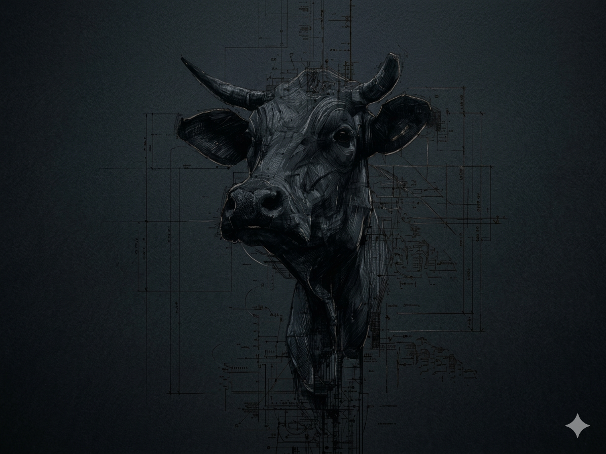
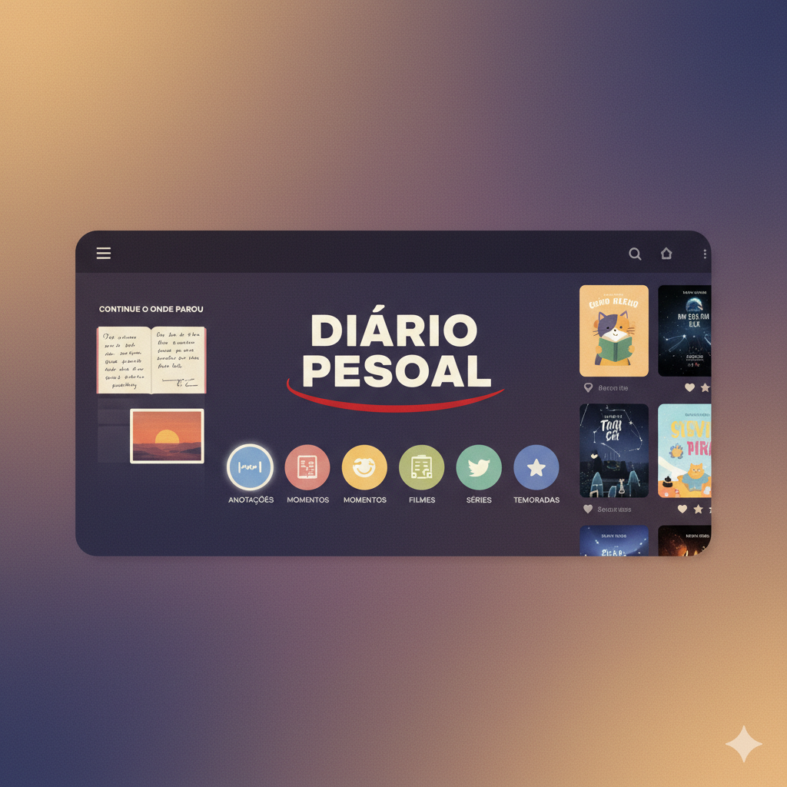

Desenvolvedor Fullstack Jr ,focado na criação de soluções eficientes comDjango e Flask,Web Scraping e Machine Learning, com experiência em TensorFlow e scikit-learn .Busco aplicar minhas habilidadesem soluções práticas e contribuir com o desenvolvimento ágil de software com foco no desenvolvimento open sourcee linux para softwares mais seguros e escalaveis
Sobre Mim
Experiência
Projetos de automacao com Python, sistemas de gestao com python e Flet com UI pratica e intuitiva, coleta e
limpeza de dados atraves de web scraping ,treinamento e otimizacao de modelos de IA com scikit-learn e TensorFlow,otimizacao
de hiperparametros e reducao de dimensionalidade ,com desenvolvimento agil profissional e responsavel
Habilidades
- Python, Django
- TensorFlow, Scikit-learn
- Docker, Kubernetes
- Beautiful Soap, Flet, Node.js
- MySQL, MongoDB, ORM
- GitHub, linux
- HTML5, CSS3, JavaScript
Educação
- Python backend AI - DIO
- Git e Github - DIO
- Machine Learning Training - DIO
- Introducao a redes neurais : Perceptrons - Aprenda mais MEC
- MCP - model context protocol - Anthropic
Meus Servicos contrataveis
Aqui vc pode saber mais sobre os servicos prestados, como posso atender suas necessidades e regras do seu negocio estes sao os servicos que podem transformar sua empresa, rotina e trazer eficiencia e praticidade
Desenvolvimento de Sites
Desenvolvimento, teste e implementacao de sites altamente personalizaveis e eficientes abrangendo todas as suas necessidades e sua imaginacao, com software seguro e confiavel o sucesso e o proximo passo
Construcao de Banco De Dados
Desenvolvimento de estruturas robustas de banco de dados, seguras e escalaveis para performance nos diferentes cenarios de uso, altamente personalizavel, de acordo com sua necessidade e orcamentos vc tera um sistema robusto e seguro .
Desenvolvimento de API's
Todo software ou sistema precisa se comunicar, construo API's personalizadas para suas necessidades, rapidas seguras e intuitivas , conectando os dados aonde estejam com quem toma as decisoes e faz acontecer .
Coleta de dados e limpeza
Saber as informacoes corretas e tudo, Crio sistemas que coletam as informacoes relevantes e necessarias para sua tomada de decisao, de forma clara, etica e responsavel para que vc possa ter em suas maos as mais robustas informacoes para sua tomada de decisao .
Software Personalizado
Aqui vc podera descrever suas necessidades, sua situacao para a criacao e implementacao de um software proprio exclusivo para sua necessidade .
Meus Projetos
Nesta secao apresento brevemente meus projetos principais algins com maior complexidade e outros ainda em fase mais inicial, esta secao apresenta breves detalhes e o conceito principal de cada um, para maiores detalhes e so clicar em "detalhes" que vc podera encontrar detalhes tecnicos e escolhas de design e podera contribuir .

BoiAPI
Uma API desenvolvida Django Rest Framework ,a api fornece os dados referentes aos valores da arroba do boi e animais semelhantes como vaca, novillhas e garrotes ,tendo como objetivo o acesso facil e confiavel a dados para sistemas do agronegocio .
Ver DetalhesSTRIDE - logs gemini API
Um sistema para a avaliacao de vulnerabilidades de codigos no modelo STRIDE com a API do gemini .
DetalhesDocker enviroment Jupyter
DetalhesMl - Recomendation
Um projeto de recomendacao de imagens similares desenvolvido com python e Scikit-learn .
Ver Detalhes
DaillyFlix web
Um diario web no estilo da netflix para o upload e organizacao de fotos e videos (momentos) pessoais em um formato similar a uma serie ou filme para uma experiencia confortavel e alegre com personalizacao total de conteudo
Ver DetalhesML - Transfer Learning
Um projeto de transferencia de aprendizado ,utilizando o conhecimento adquirido de um modelo pre treinado, e adicionando novas camadas .
DetalhesContatos
Nesta secao vc pode encontrar meus contatos, conversar sobre tecnologias e curiosidades do mundo tech, conhecer meus trabalhos e entrar em contato para solicitar um orcamento para suas necessidades .
Online para Freelas
contact_api.py
import backend_dev
me = backend_dev.get_info(name="Vinycius Assis Fonseca")
if project_urgent:
me.send_email(subject="Novo Projeto")
Enviar Email
me = backend_dev.get_info(name="Vinycius Assis Fonseca")
if project_urgent:
me.send_email(subject="Novo Projeto")
Tem alguma necessidade, precisa automatizar processos, implementar boas praticas, seguranca? Entre em contato diretamente comigo!
Chamar agora →Open Source
Gosta do meu código? Sinta-se livre para contribuir ou fazer um fork.
- Acesse o repositório
- Abra um Pull Request
- Seja claro nos commits
Disponibilidade
Atuando em Minas Gerais para vagas Presenciais e disponível para todo o Brasil em regime Home Office (CLT/PJ) e Freelancer para software personalizado.
Refatoração
Microserviços
Software personalizado
implementacao